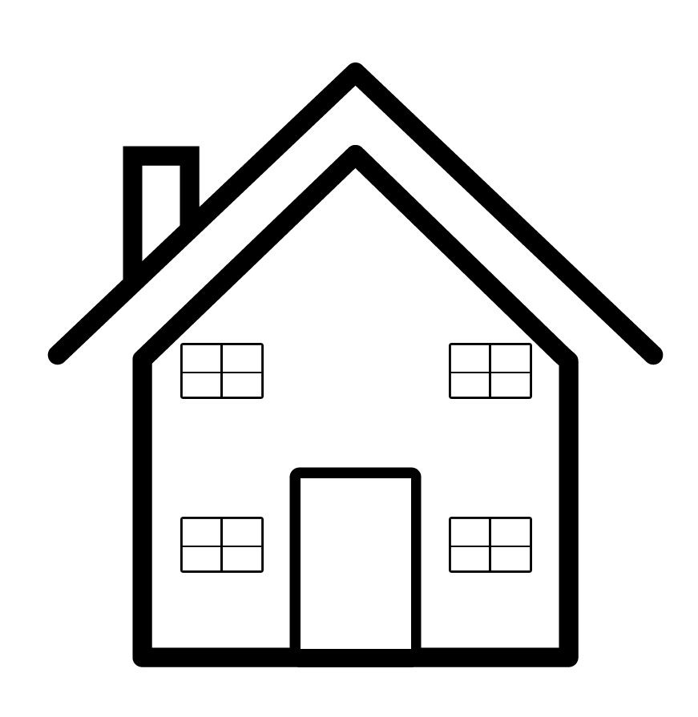
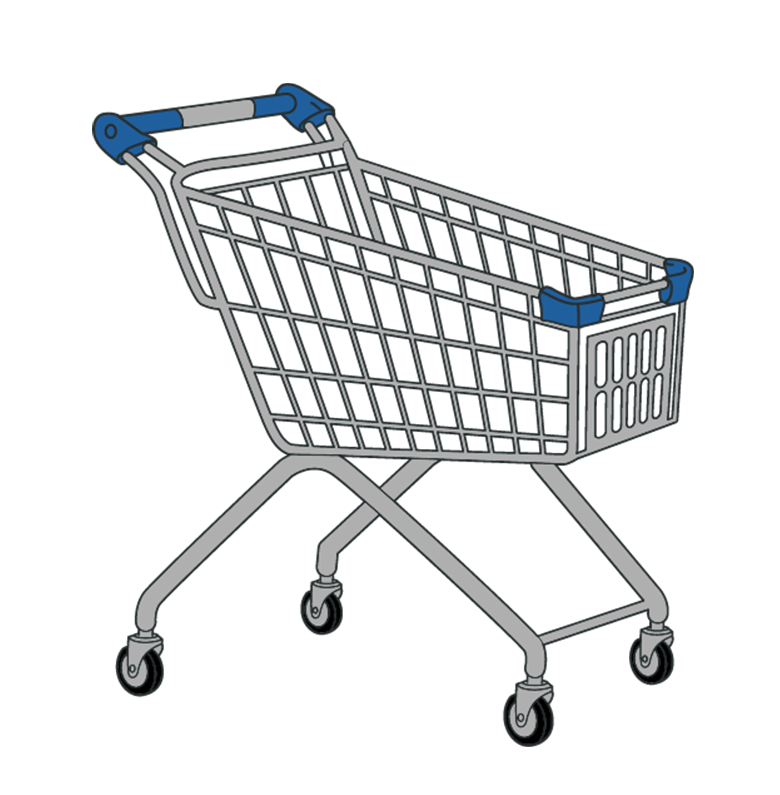
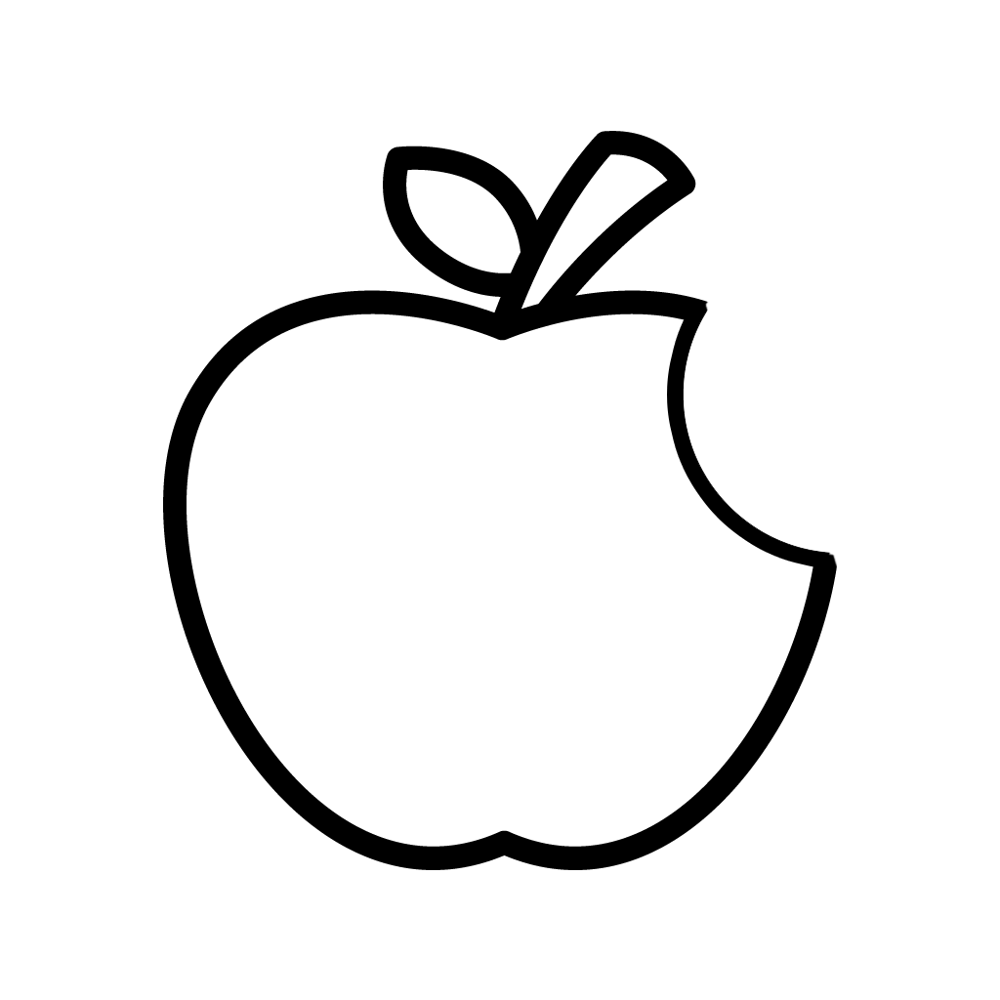
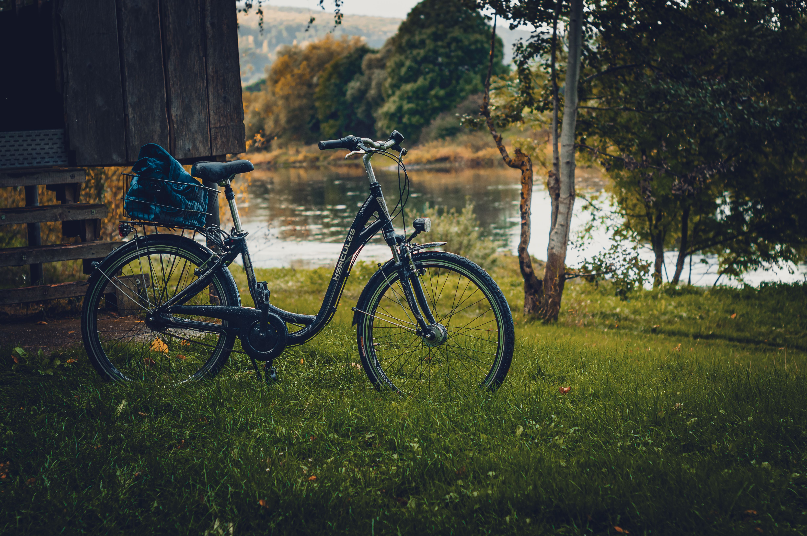
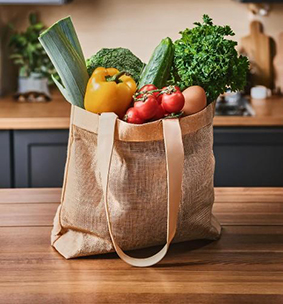
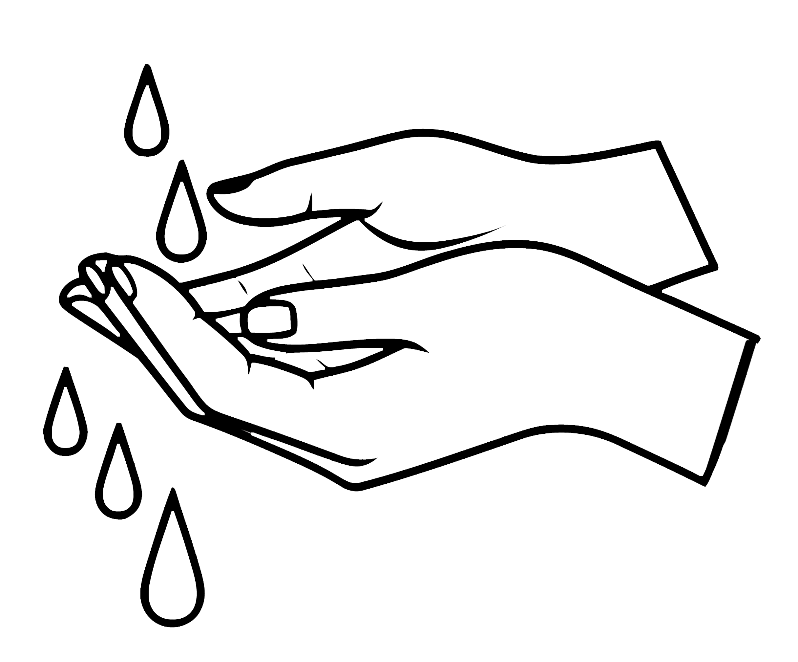
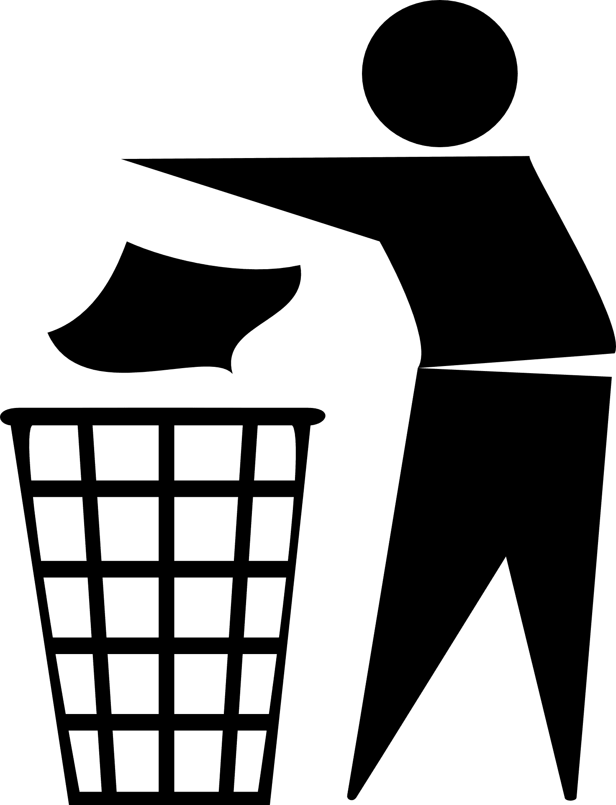
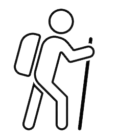

Hjemmet

Forbrug

Mad & indkøb
Vigtigste Artikler
Se alle artikler


Gode vaner skaber en grønnere fremtid
Tilmeld dig og få de bedste tips, guides og artikler hver dag
Praktiske tips til hverdagen

Spar på vandet
Enkelt tip til at bruge mindre vand i din hverdag

Skab mindre affald
Små ændringer i hverdagen kan gøre en forskel

Brug naturen
Kom ud i naturen og få mere energi _ helt gratis